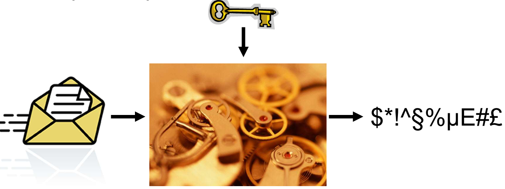

Introduction à la cryptographie :

Claude Elwood Shannon
(1916-2001)
Claude Elwood Shannon
(1916-2001)
Aperçu des principaux outils cryptographiques modernes :
Chiffrement
Codes d'authentification des messages (MAC - Message Authenticaton Codes)
Signature
PKI
...
Approche descendante à partir d'exemples concrets :
Approche fonctionnelle
Comment ça marche
Ce qu'il fait
Je ne vais pas vous transformer en cryptographes en quelques heures !
C'est la science de la sécurité de l'information.
confidentialité
l'intégrité des données
authentification de l'entité
authentification de l'origine des données
Il y a deux disciplines :
cryptographie : conception de primitives, ...
cryptanalyse : analyse de sécurité, attaques, ...

Authentification/contrôle d'accès
Cryptage
Signature numérique
Commerce électronique
... et bien plus encore

Sparte, 400 avant JC
Un ruban est enroulé autour d'un bâton.
Le message est écrit sur le ruban.
Le ruban est déroulé et remis au messager.
Pour décrypter, il faut un bâton du même diamètre (= clé).
Cela équivaut à :
Écrire un texte en lignes de taille fixe
Le transposer en colonnes
Clé = largeur de ligne
Il s'agit d'un chiffrage de transposition : les symboles sont déplacés, mais leur valeur ne change pas.
Bien sûr, assez facile à casser.

Chaque lettre du message est remplacée par celle située x places plus loin dans l'alphabet.
Exemple : x = 3.

Il s'agit d'un chiffrement de substitution : les symboles sont remplacés selon une certaine transformation, mais leur position ne change pas.
La transposition et la substitution sont toujours au coeur des chiffrements symétriques modernes.
Répétez 16 fois.
Il s'agit de la norme de cryptage des données (DES - Data Encryption Standard).
C'est un dictionnaire (secret) contenant un (ou plusieurs) mot(s) de remplacement pour chaque mot en clair.
Si le livre est pris par des ennemis, les secrets sont perdus.
Si le même mot de remplacement est utilisé trop souvent, une analyse de fréquence devient possible.
Remarque : des variantes étaient encore utilisées pendant la Seconde Guerre mondiale (par exemple : code Navajo).


https://... → HTTP Secure

Ce document provient bien de fgov.be.
Son contenu n'a pas été modifié.
Confidentialité : Personne ne peut lire les données pendant leur transmission.

PKCS #1 SHA-1 - RSA

Une norme cryptographique publique.
Tous les détails sur les opérations effectuées sont disponibles sur le web.
Ce caractère public ne limite-t-il pas d'une manière ou d'une autre la sécurité ?
L'attaquant connaît tous les détails de l'algorithme.
Seule la clé est inconnue.

Peut-on parvenir à un cryptage parfait ? Oui.
Shannon : one-time pad.


Peu importe :
la puissance de calcul
la quantité de données interceptées
la technique utilisée
Il est impossible d'obtenir la moindre information sur le message (sauf sa longueur).
→ Sécurité théorique de l'information.
Mais la clé doit être :
vraiment aléatoire
utilisée une seule fois (longueur > quantité totale de données)
échangé de manière totalement fiable
stocké dans un endroit parfaitement sûr
→ Impossible d'appliquer en pratique.
→ Nous devrons baisser nos critères :
Limiter la puissance de l'adversaire : sécurité informatique.
Abaisser la définition de sécurité (par exemple : attaque possible, mais avec une très faible probabilité).
Si nous voulons avoir une chance de construire des systèmes sécurisés, nous devons au moins trouver une définition solide de la sécurité.
Pouvons-nous nous mettre d'accord sur une définition claire, formelle et sans ambiguïté ?
→ Essayons.
Étant donné un texte chiffré, aucun adversaire ne devrait être en mesure de récupérer la clé.
Étant donné un texte chiffré, aucun adversaire ne devrait être en mesure de récupérer le texte en clair.
Étant donné un texte chiffré, aucun adversaire ne devrait être capable de récupérer un caractère du texte en clair.
Étant donné un texte chiffré, aucun adversaire ne devrait être en mesure de récupérer des informations sur le texte en clair.
L'adversaire peut demander le cryptage de nombreux messages : m0, ..., mn.
L'adversaire construit alors deux messages : m'0 et m'1.
L'un d'eux est choisi, crypté et restitué à l'adversaire.
Encore une fois, l'adversaire peut demander le cryptage de nombreux messages : m"0, ..., m"n
L'adversaire devine lequel de m'0 ou de m'1 a été renvoyé.
Un système est considéré comme sécurisé si nous pouvons prouver que :
Il ne peut exister un tel adversaire avec une puissance de calcul "limitée" (avec une définition précise).
Réussir avec une probabilité non négligeable.
Remarque : Ceci n'est qu'un exemple de définition de sécurité : de nombreuses variantes existent.
Un adversaire ne devrait pas pouvoir dire quoi que ce soit sur la signification d'un message chiffré.
Pas même le fait que le même message ait été observé auparavant !
→ Le cryptage doit donc être probabiliste.
Le même message, chiffré plusieurs fois, avec la même clé, donne des textes chiffrés différents.
Le cryptage symétrique est basé sur une clé secrète partagée et permet :
Transformation du texte brut en texte chiffré (chiffrement)
Récupération du texte brut à partir du texte chiffré (déchiffrement)
L'adversaire ignorant la clé ne peut récupérer aucune information sur le message (sauf sa taille).
Bien entendu, la même clé peut être utilisée pour transmettre un grand nombre de messages.
Schémas basés sur des chiffrements par blocs.
(ou alternativement, des chiffrements de flux)
Un composant d'un système de chiffrement symétrique :
Paramètre avec une clé
Traite des blocs de données de taille fixe

Quelques exemples bien connus :
DES (ancien)
AES
Twofish
Serpent
OpenSSL est une boîte à outils de chiffrement comportant deux bibliothèques, libcrypto et libssl, fournissant respectivement une implémentation des algorithmes cryptographiques et du protocole de communication SSL/TLS, ainsi qu'une interface en ligne de commande, openssl. Développée en C, OpenSSL est disponible sur les principaux systèmes d'exploitation et dispose de nombreux wrappers ce qui la rend utilisable dans une grande variété de langages informatiques.
Commencez, au choix, par :
Installer OpenSSL sur votre PC. Attention cependant : l'étape in the User variables section, select Path and click Edit
n'est pas 100% claire : veillez bien à ajouter une nouvelle ligne au path.
Alternativement,vous pouvez utiliser un émulateur d'OpenSSL.
Créez un fichier "texte_clair.txt" et écrivez-y un message, puis chiffrez-le au moyen de la commande (à taper en une ligne) :
openssl enc -e -aes-128-ecb -in texte_clair.txt -out texte_chiffre.enc -K 0102030405060708090A0B0C0D0E0F00
La commande ci-dessus n'est PAS une bonne pratique, comme nous allons le voir.
À quoi correspondent les paramètres -e, -in, -out, -K ? (nous reviendrons sur -aes-128-ecb plus tard)
-e → encrypt : chiffrement.
-in texte_clair.txt : fichier d'entrée (texte clair).
-out texte_chiffre.enc : fichier chiffré en sortie.
-K KEY : clé en hexadécimal donnée manuellement.
Quelle est la taille de clé utilisée ?
La clé 0102030405060708090A0B0C0D0E0F00 contient 32 caractères hexadécimaux, soit 128 bits (car 2 hex = 1 octet = 8 bits).
Réponse : clé AES-128 bits.
Comment déchiffrer le fichier ainsi produit ?
openssl enc -d -aes-128-ecb -in texte_chiffre.enc -out texte_dechiffre.txt -K 0102030405060708090A0B0C0D0E0F00L'option -d (decrypt) permet de déchiffrer.
Essayez de chiffrer/déchiffrer un fichier avec une clé de 256 bits.
Il suffit d'utiliser AES-256-ECB pour chiffrer/déchiffrer :
openssl enc -e -aes-256-ecb -in texte.txt -out texte.enc -K <clé 64 hex>openssl enc -d -aes-256-ecb -in texte.enc -out texte_dechiffre.txt -K <clé 64 hex>64 hex = 256 bits.
Chiffrez le texte suivant (attention à le copier exactement) :
ANTICONSTITUTIONNELLEMENT EST LE PLUS LONG MOT DE LA LANGUE FRANCAISE, MAIS, QUAND ON Y REFLECHIT, CE MOT N'EST GUERE UTILISE QUE JUSTEMENT DANS CETTE PHRASE: <ANTICONSTITUTIONNELLEMENT EST LE PLUS LONG MOT DE LA LANGUE FRANCAISE>. C'EST UN PEU ABSURDE...Observez attentivement le fichier chiffré (ce sera sans doute plus aisé avec un éditeur hexadécimal, comme par exemple https://hexed.it/). Que constatez-vous ? Essayez de reproduire le phénomène avec d'autres textes.

Les blocs identiques donnent des blocs chiffrés identiques.
Donc on voit des répétitions évidentes dans l'hexadécimal.
C'est une fuite d'information !
Ceci est-il quelque chose que l'on attendrait d'un bon système de chiffrement ?
ECB = pas sûr du tout, car il n'utilise pas d'aléa.
Ce n'est PAS ce qu'on attend d'un bon chiffrement.
Chiffrez plusieurs fois le même fichier avec la même clé, et comparez les résultats.
À nouveau, ceci est-il quelque chose que l'on peut attendre d'un bon système de chiffrement ?
Le résultat sera strictement identique à chaque fois.
C'est une faille grave : un attaquant voit les répétitions.
Ce constat va nous permettre d'introduire un concept très important en matière de block ciphers : les modes d'opération.
Les chiffrements par blocs fonctionnent par blocs.

Les blocs de texte en clair donnent les mêmes blocs de texte chiffré.
La détection de patterns est possible.
Nous ne pouvons pas accepter cela : la qualité du cryptage ne doit pas dépendre de la structure du texte en clair.
→ Les modes d'opération peuvent résoudre le problème.


C'est un "paramètre de diversification", garantissant que les messages avec le même en-tête et ne génèrent pas le même texte chiffré.
Il est généralement transmis avec un texte chiffré.
→ Il n'a pas besoin d'être secret.
Mais il doit changer à chaque fois et doit être imprévisible.

Il assure la confidentialité des données sur la base d'une clé secrète partagée.
Il est défini par :
Un chiffrement par bloc (AES, Twofish, Serpent, ... Mais pas DES !)
Un mode d'opération (CBC, OFB, CFB, ... Mais pas ECB !)
Il utilise une norme et l'utilise exactement comme décrit.
Tentez à nouveau de chiffrer différents fichiers, en utilisant cette fois un mode d'opération tel que AES-CBC ou AES-CTR.
Comment résoudre le message d'erreur "iv undefined" ?
Parce que CBC/CTR ont besoin d'un IV (vecteur dinitialisation).
On doit donc ajouter :
-iv <IV en hex>Par exemple :
openssl enc -e -aes-128-cbc -in texte.txt -out texte.enc -K <clé> -iv 000102030405060708090A0B0C0D0ELes problèmes ci-dessus se manifestent-ils à nouveau ?
Non les problèmes précédents disparaissent.
CBC masque les répétitions grâce à l'IV.
CTR transforme AES en flux cryptographique.
→ Les motifs ne réappareissent plus.
Que se passe-t-il si on chiffre plusieurs fois le même fichier avec la même clé et le même IV ? Lequel de ces paramètres doit-il impérativement changer à chaque nouveau chiffrement ?
On retrouve le même résultat, comme en ECB.
⚠ Interdit en cryptographie.
Note : la documentation (imparfaite) relative au chiffrement symétrique sous openssl.
L'IV doit obligatoirement changer.
La clé peut être réutilisée (dans certaines limites), l'IV jamais.
Testez l'outil de benchmarking : quel est le débit du chiffrement AES sur votre machine ?
Cela dépend de ton CPU. Typiquement :
1 GB/s (anciens)
3-5 GB/s (modernes Intel/AMD)
8-10 GB/s (AES-NI)
Créez un volume chiffré ("encrypted file container, standard").
Pourquoi faut-il bouger la souris durant la création ?
Pour récolter de l'entropie (aléa) utilisée pour générer :
la clé maîtresse
les algorithmes internes
Plus tu bouges, plus l'aléa est bon → meilleure sécurité.
Essayez de monter le volume, d'y ajouter des fichiers, de le démonter...
Pourquoi le montage est-il si lent, alors que les benchmarks sont excellents ?
Parce que VeraCrypt doit :
dériver ta clé (fonction très lente de type PBKDF2)
vérifier l'en-tête du volume
D'où la lenteur → c'est normal.
Que se passe-t-il si le mot de passe est incorrect ?
VéraCrypt prétend juste que le volume est invalide.
Il ne dit jamais "mauvais mot de passe". C'est volontaire pour ne donner aucune information à un attaquant.
Un volume VeraCrypt doit-il obligatoirement porter l'extension .hc ? Pourquoi ?
Non car un volume VeraCrtpt peut avoir :
.hc
.dat
.bin
ou aucune extension
L'extension sert juste pour l'utilisateur.
Que se passera-t-il si vous oubliez votre mot de passe ?
→ Perte définitive des données.
Il n'y a aucun moyen de récupérer le volume.
D'accord, alors...
Nous avons essentiellement résolu le problème de confidentialité, à condition que les deux parties partagent une clé secrète.
Comment peuvent-elles obtenir un tel secret ?
Fondamentalement, il existe deux options :
Trouver un moyen de le transmettre : le cryptage asymétrique.
La construire ensemble : les protocoles d'accord de clé.